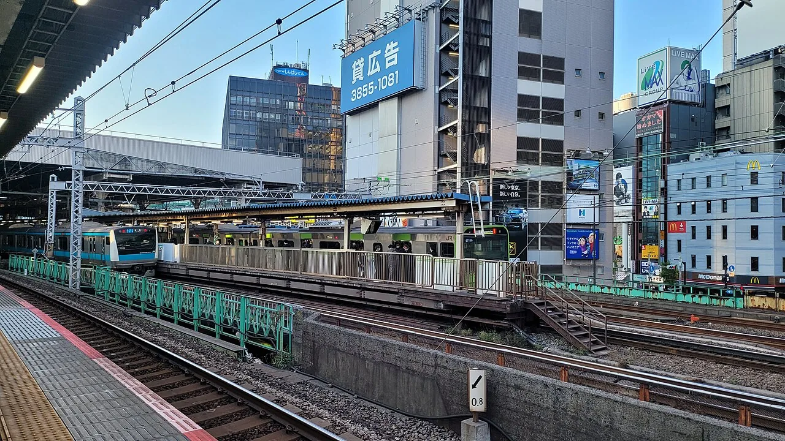

The museum of fire-hose inlets
Four minutes' walk from Shimbashi Station, on the fifth floor of an office building, is a free museum devoted to a single object: the 送水口 (sōsuiko), the brass fitting on the outside of a building that a fire crew connects its hoses to. It was opened in 2015 by the manufacturer that makes them, it exists because its founder started rescuing pre-war fittings from buildings scheduled for demolition, and you are allowed to touch almost everything in it. Japanese coverage has called it the first such museum in the world. There is, as far as we can find, no substantial English write-up of it anywhere — so here is one.

What a sōsuiko actually is
A sōsuiko is the external inlet for a building's 連結送水管 (renketsu sōsuikan) — a dry riser. The building contains a vertical pipe with outlets on the upper floors; the pipe is empty until it is needed. When a fire crew arrives they connect their pumping appliance to the inlet on the outside wall and charge the riser, so that firefighters upstairs can connect hoses without dragging them up from the street.
Japanese law requires it at scale. Under the Fire Service Act's enforcement order, a connected water supply pipe is required for buildings of seven storeys or more above ground, and for buildings of five storeys or more with a total floor area of 6,000 m² or greater, among other cases. Anglophone readers may know the equivalent fitting as a fire department connection or a siamese connection.
The devices spread in Japan after the Great Kantō Earthquake of 1923, which means the oldest surviving examples are approaching a century old — and are disappearing at the pace of Tokyo's redevelopment.
Visiting: hours, access, cost
| Detail | Information |
|---|---|
| Name | Sōsuiko Museum送水口博物館 |
| Address | 5F Murakami Tatemono Building, 2-11-1 Shinbashi, Minato-ku, Tokyo東京都港区新橋2-11-1 村上建物ビル5階 |
| Access | About 4 minutes' walk from Shimbashi Station (JR, Tokyo Metro, Toei, Yurikamome) |
| Opened | November 2015 |
| Open | Thursdays every week, plus alternate Saturdays, 14:00–19:00 |
| Admission | Free |
| Founder | Murakami Zen'ichi, third-generation president of Murakami Seisakusho, a long-established maker of these fittings |
| Official site | zentech.co.jp/museum/ — see the warning below |
This is a small private museum open two or three afternoons a month, and the exact Saturdays are announced on its own site. When we checked, that site returned an SSL certificate error and we could not read it, so the hours above come from Japanese coverage including the Agency for Cultural Affairs' own magazine rather than from the museum directly. Treat the schedule as indicative and confirm before making the trip. Do not assume English-language service.
How a museum came to exist
The origin story is unusually well documented, and it starts with a stranger's email. In May 2014 the company was contacted by a manhole-cover enthusiast — Japan's collecting cultures being what they are — and through that contact Murakami found there were people who cared about his products as objects. That led to a rescue operation: retrieving old inlets from buildings scheduled for demolition, including the former Bridgestone head office, rather than letting them go to scrap.
Once there was a collection there needed to be somewhere to put it. The museum was built into the upper part of the company's own building in a roughly four-month push, timed as the manufacturer's 80th anniversary project, and opened in November 2015. Murakami handled it largely himself, from the design through to the installation.
It has grown since. Coverage from around 2022 described material from about 25 sites across Tokyo, Yokohama and Kyoto; by a 2023 interview the collection was described as more than 30 pieces. It began with four.
What to look at
The collection's interest lies in variation within a strictly functional object. Some of the axes:
- Twin versus single inlet. The twin-mouthed type is the standard. The single-mouthed type appeared in regulations in 1950 and was gone by 1962 — a twelve-year window that makes any surviving example datable at a glance.
- Wall-recessed versus standpipe. Two entirely different installation traditions, one set into the facade, one standing free on the pavement.
- Unusual forms. Fan-shaped inlets; decorated housings in Okinawa built like little huts; imported American units from the Allen company.
- Age. Examples from before the early 1970s are the ones vanishing fastest as buildings are replaced.
Two details make the museum better than the subject sounds. The display stands were built to reproduce the dimensions of the tiling each fitting was originally set into, so a piece is shown in the geometry it actually lived in. And almost everything may be handled — an ordinary courtesy for a hardware museum, and one that very few Japanese museums extend.
Spotting them on the street
The best part of the visit is what happens afterwards. Once you know the shape, you cannot stop seeing them: every mid-rise and above in central Tokyo has one somewhere near its base, usually painted red or left as bare brass, often with a small sign above it. Shimbashi itself, full of buildings from several different eras, is a good place to start looking, and it is where you already are.
This is the same pleasure that drives Japan's other infrastructure hobbies — the moment when a category of object you had filtered out becomes visible, and the street turns out to have been full of it the whole time.
Some links above are affiliate links. We may earn a commission at no extra cost to you. We only list services we'd use ourselves.
The Japanese you'll actually use
| Japanese | Reading | Meaning |
|---|---|---|
| 送水口 | sōsuiko | fire department water inlet — the museum's subject |
| 連結送水管 | renketsu sōsuikan | connected water supply pipe — the dry riser it feeds |
| 消防 | shōbō | firefighting / fire service |
| 博物館 | hakubutsukan | museum |
| 入館無料 | nyūkan muryō | free admission |
| 開館日 | kaikanbi | opening days — the thing to check first here |
| 触れます | furemasu | "you may touch" — rare on a Japanese museum label |
| 解体 | kaitai | demolition — why the collection exists |
Want these to stick? The free JLPT battle quiz drills travel vocabulary like this with spaced repetition.
Japan's habit of looking hard at unglamorous infrastructure also produces power line appreciation →, air-conditioner unit spotting →, manhole cards → and dozens of other free public collectible card series →. Planning the wider city? Our free Tokyo guide →.
Common questions
Q. What is the Sousuiko Museum?
A. A small free museum in Shimbashi, Tokyo, devoted to sōsuiko — the external fittings that fire crews connect their hoses to in order to charge a building's dry riser. It opened in November 2015 and Japanese coverage has described it as the first museum of its kind in the world.
Q. Where is it and how do I get there?
A. Fifth floor, Murakami Tatemono Building, 2-11-1 Shinbashi, Minato-ku, about four minutes on foot from Shimbashi Station.
Q. When is it open, and what does it cost?
A. Admission is free. It opens on Thursdays and on alternate Saturdays, 14:00–19:00. Because it opens only two or three afternoons a month and the specific Saturdays are announced by the museum, confirm the date before travelling.
Q. Why does a museum for this exist?
A. Its founder, Murakami Zen'ichi, runs the manufacturer that makes the fittings. After being contacted by an enthusiast in 2014 he began rescuing old inlets from buildings due for demolition, and built the museum as the company's 80th anniversary project to display them.
Q. Can I touch the exhibits?
A. Almost all of them, yes — unusually for a Japanese museum. The display stands even reproduce the tile dimensions of the walls the fittings originally sat in.
Q. What makes one inlet different from another?
A. Twin-mouthed versus single-mouthed types, wall-recessed versus free-standing installations, and unusual variants including fan-shaped units, decorated housings from Okinawa, and imported American fittings. The single-mouthed type only existed in regulation between 1950 and 1962, which dates any survivor immediately.
Q. Is there English-language support?
A. Assume not. This is a small specialist museum run by a manufacturer, and we could not confirm any English provision.